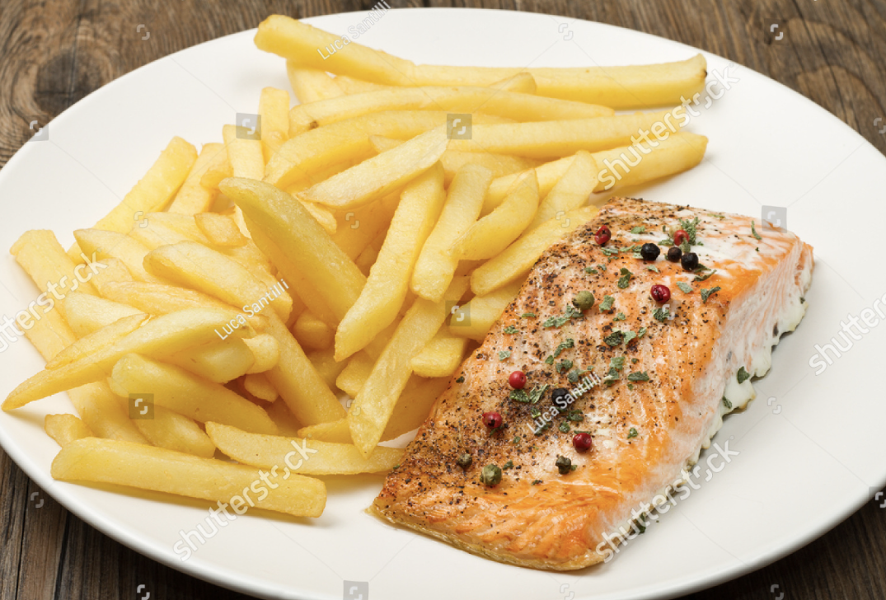

Descitpion
Fish and chips, classic dish of the British Isles, consisting of battered and deep-fried fish, usually salmon or cod, and french fries.
Ingridients
- Salmon
- French Fries
- Butter
- Seasonings
- Dinner rolls (Optional)
Steps
- Pre heat oven for 5mins
- Grab oven tray and place foil over
- Place Salmon on seperate foil and add preferred seasonings with butter
- Place chips around the salmon on the foil
- Cook in oven for 25-30mins
- Additionally if you have dinner rolls, place in oven and let it heat for 10-15mins
- When food is prepared you may serve and enjoy!!